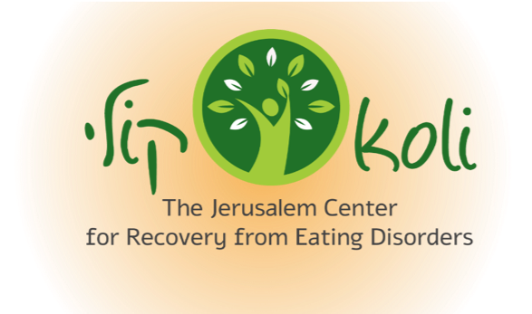

Daniella Pardes was a fun-loving, spunky child until anorexia hijacked her at the age of 13. After a three month hospitalization, Daniella was not healthy enough to return to a school structure nor to the friends whom she loved. However, there was one place where she found refuge, and that was at Ofer’s Kalbia (a therapeutic dog kennel) on Moshav Ora. While she had little ability to love and care for herself, she had an endless supply for the dogs. Every morning without exception, she would spend three hours lovingly caring for them. In her protected kingdom, she knew what each dog needed, how to take charge, and she even instructed the veterinarian. After a few months, it was time to integrate Daniella back into society. Her mother, Hadassa, searched for a therapeutic program which would absorb, protect and mainstream her back into her world. Unfortunately, she never found one suitable to her needs. On December 11, 2017 at the tender age of 14, Daniella took her own life. Beit Daniella is designed to provide for other teens who are suffering like her, that therapeutic, rehabilitative stepping stone.
A supportive and potentially life-saving recovery day center for youth who are struggling with mental health issues, Beit Daniella is a short term program that provides youth with vital skills to transition back into their families, schools and communities. Situated in a natural setting with an emphasis on animal-assisted therapy, Beit Daniella aims to help youth to build on their strengths, to develop resilience, to learn to better regulate their emotional states , to take responsibility and to develop functional skills for a life worth living. Appreciating that parents are the primary caretakers of their child , Beit Daniella also provides parents with skills and support to help themselves and their child to cope with his/her challenges.
Beit Daniella serves non-denominational youth between the ages of 13 to 18 (8th to 12th grade) who are struggling with mental health issues such as depression, anxiety, trauma and eating disorders who need a short-term, non-traditional structure for rehabilitation. Candidates can be post-hospitalization or at home but not functioning. Candidates must be motivated for recovery, interested in returning to functional life, and mature enough to engage the therapeutic process. In addition, candidates must have supportive parents who are willing to play an active role in their child's recovery.
The program at Beit Daniella is not designed to safely support those with neurodevelopmental disorders including intellectual disability and autism; those with active substance abuse disorders; those who are of life threatening harm to themselves and those with severe eating disorders requiring close supervision.
Beit Daniella is located in Havat Harei Yehuda Horse Stables in the picturesque Judean Hills. This beautiful natural setting is ideal for emotional healing. The Harei Yehuda riding stable is located in Tsur Hadassah, about 15 minutes by car from Jerusalem, Beit Shemesh and Gush Etzion.
Beit Daniella is located in Tzur Hadassah at the picturesque Havat Harei Yehuda Horse Stables in the Judean Hills.
Within proximity of Jerusalem, Beit Shemesh and Gush Etzion, this pastoral location is particularly well suited to healing
Find us on Google Maps


As we are a grassroots organization, our partners are especially important to us. In record time, Beit Daniella has won the confidence and support of a wide range of partners.
As we are catering to a particularly vulnerable population, our medical partners ensure that we maintain the highest standard of medical responsibility. Our corporate partners enable us to run our organization with corporate productivity and professionalism. Our professional partners keep us up to date with regards to the latest research and best practices. Our government partners supply us with important partial funding and essential supervision. Each year since our founding , we have enlisted a new government partner to our mission.


Simlai Foundation

Letter from President of Israel (translated from Hebrew)
Letter from President of Israel (Hebrew)
Letter from Prof. Yoav Kohen, Director Youth Department, Eitanim Psychiatric Hospital (Hebrew)
Letter from Dr. Rachel Bachner, President of the Israeli Association for Eating Disorders (Hebrew)
Position Paper, Psychological Services, Ministry of Education- Jerusalem District (Hebrew)
Tax Exempt Status in Israel - אישור סעיף 46
Beit Daniella is situated in Harei Yehuda Horse Stables at the edge of the Sansan Nature Reserve. Our youth are entrenched in nature- within our pastorale grounds or on daily nature walks with the dogs. Planting, gardening and eating the fruits/vegetables of their labor, Beit Daniella students blend seamlessly with their ecosystem and are active players in its growth and development.
Under the supervision of Project Hila - a Ministry of Welfare sponsored independent studies program, Beit Daniella runs a learning center tailored to students who were not able to attend school regularly due to mental health challenges. In addition to teaching core curriculum subjects and closing knowledge gaps in advance of their re-entry to the school system, the center prepares each student individually towards his/her matriculation exams where relevant. The learning center’s main objective is to bolster learning skills and build the student’s confidence in his/her ability to study, succeed and transition back into school structures.
Our students prepare their own fresh, healthy meals from scratch, under the guidance of Chef Ofer Biton, Co-manager of Beit Daniella. Cooking is not only a basic life skill that promotes independence, it contains within it a critical element of self care. Students with eating disorders who struggle with anxiety and fear connected to food, are exposed to and coached in normative eating habits in a supportive environment.
Through their interdependent relationship with the therapy dogs in Beit Daniella’s kennel and through direct responsibility for their care, Beit Daniella’s students learn unconditional love and acceptance, trust, empathy, responsibility, hygiene and healthy daily routine.
Mental health challenges are isolating, especially in the socially vulnerable age of adolescence. As such, Beit Daniella is a great believer in the power of the group - to reflect, support and sometimes challenge the individual. In addition to daily group sessions, Beit Daniella provides weekly sessions in DBT (Dialectical Behavioral Therapy) and in Eating Disorder related topics. As DBT has been proven particularly effective in emotional regulation amongst teens , Beit Daniella runs DBT skills groups to cultivate independence in emotional regulation.
The warm relationship between human and horse is legendary. Through the direct and immediate action-response dynamic between rider and horse, youth understand the implications of their actions and learn to control their own responses to stimuli from the outside. The freedom through discipline in dealing with this large, majestic animal, results in an exciting, renewed sense of self confidence and competence.
In recognition of the family’s critical role in the process of healing and rehabilitation, Beit Daniella staff supports and guides parents in containing and supporting their struggling children. In addition to ongoing individual guidance, a weekly DBT skills group is provided to arm parents with the necessary skills to help their children cope with extreme emotional states at the same time as they preserve and maintain their own balance and most effectively respond to their child.
As Beit Daniella is a transition facility, one-on-one psychotherapy, psychiatry and nutritionists (where relevant) are outsourced to the students’ local community clinics. This ensures consistency of individualized care before and after the student’s stay at Beit Daniella. At the same time, our staff maintains direct communication with all outside health care providers for effective case management.

Beit Daniella’s staff works with each student on an individualized personal plan which involves gradual integration into community life-school, youth groups, friends, leisure activities. The staff accompanies the students in implementing the plan and in meeting the inevitable challenges that arise along the way. Beit Daniella’s ultimate goal is to direct the students towards a full family and community life, with and in spite of their mental health challenges.
“I started running three years ago as way to get back into shape and reclaim part of myself. Now I am the Israel national champion in half and full marathon. I never imagined I'd end up on this journey but I am currently pursuing the Olympic dream and hope to represent Israel in 2020. If you have been following my own running journey and want to show your support...donating to Beit Daniella is the best way to do it. People have sometimes asked me what is the connection between Beit Daniella and running and the word I would use is empowerment. Running has empowered me in so many ways, it has allowed me to uncover strengths I never realized I have. The goal of Beit Daniella is to provide a safe and empowering space for teens who are struggling and give them an opportunity to discover their unique gifts. When I think about my cousin Daniella and her story, what saddens me most is that she was so incredibly talented and yet she couldn't appreciate her strengths, she only saw her flaws. She wanted so badly to reintegrate into life after hospitalization, but there was no place for her to go, no place that would absorb, protect and empower her to mainstream back into her world. With your generous donation and support. Beit Daniella will fill that void, and prevent other precious children from suffering the way Daniella did.”
Beatie has taken the world by storm, not only by shattering limits in her short, 3 year running career but through
the winning attitude that drives her forward. She is a role model of physical and emotional balance, and we are so proud to have Beatie
representing Beit Daniella.
Beatie in the Press
Stay tuned for Beatie’s Upcoming Website Launch for the comprehensive press listing. For now, here’s a taste of Speedy Beatie!
Runners World
Jan. 24, 2019
Israeli Morning News: TV Interview (Hebrew)
Jan. 6, 2019
Ynet News,
Jan. 7, 2019
If it takes a village to raise a child...
it takes a (Global) Village to save a child.
We suffered, we struggled, we dreamed, we fought..and we were blessed. In one and a half years, Beit Daniella has been transformed from vision to reality...with and through YOU!
We can’t continue without you. Fuel youth who are struggling desperately.
Donate. Now.
| Israel: | USA: |
|---|---|
| Beit Daniella c/o Pardes 13 Maale Oranim Jerusalem 97276 Israel | American Support for Israel PO Box 3263 Washington, DC 20010 United States |
| UK: | Canada: |
|---|---|
| UK Gives 483 Green Lanes London, England N134BS United Kingdom | Canada Charity Partners 5785 Smart ave. Cote St Luc, Quebec H4W2M8 |
| Name | Number | |
|---|---|---|
| Bank | Mercantile Discount Bank Ltd | 17 |
| Branch | Ramot | 742 |
| Account | בית דניאלה בע"מ (חלץ) | 80249533 |
| Bank Name | Mercantile Discount Bank Ltd |
|---|---|
| Branch Number | 0742 |
| Branch Name | Ramot |
| BIC Code | Bardilit |
| Number IBAN (23 Digits) | IL380177420000080249533 |
| Currency of the Account | New Israeli Shekel |
| Beneficiary’s Name | Daniella’s Den Ltd (CC) |
info@beitdaniella.org
+972 55 551 5788
Havat Harei Yehuda, Tzur Hadassah
Beit Daniella, ℅ Pardes, 13 Maale Oranim, Jerusalem 97276